Introduction
OverviewWelcome to Boomi Managed File Transfer (MFT) — your solution for simple, secure, and reliable file transfers. As part of Boomi's unified data integration platform, Boomi MFT consolidates all your file transfer operations into a single platform, streamlining workflows and reducing costs.
If you're managing a fragmented landscape of legacy SFTP servers, custom scripts, and point-to-point solutions, you know how difficult it is to monitor, govern, and scale. Boomi MFT eliminates that complexity — delivering enterprise-grade security, governance, and control in one platform accessible to both technical and business users.
🔒 Enterprise Security
End-to-end encryption, PGP/SSH key management, FTPS certificates, and built-in AV scanning — included, not bolted on.
🔍 Full Visibility
Every transfer is tracked end-to-end. See when a file arrived, was renamed, compressed, delivered — or failed.
🌐 Flexible Deployment
Cloud, on-premises, and hybrid. MFT Runtimes bridge firewalls and access local file systems the cloud can't reach.
🤝 Multi-Party Ready
One flow, many subscribers. Add or remove partners without rebuilding your entire transfer process.
Core Concepts
FoundationsBoomi MFT is built around two applications and a handful of key objects. Getting these clear before you build will save you a lot of time.
Two Applications
⚡ Automated File Transfer
System-to-system. Scheduled batch processes or event-driven transfers. Built around Flows — the main focus of this lab.
📤 File Sharing
User-centric, ad-hoc transfers. Designed for large or sensitive files that people need to send manually.
Key Objects
| Object | What it is | Think of it as… |
|---|---|---|
| Organisation | A participant — internal entity or external partner/supplier | A company or department |
| Endpoint | Connection credentials and protocol for an organisation (SFTP, S3, etc.) | A mailbox or loading dock |
| Flow | The file transport route. Organisations subscribe as source or target. Flows, not folders. | A shipping lane |
| Runtime | A lightweight agent installed on-premises to reach behind firewalls and local file systems | A local delivery driver |
| Subscriber | An organisation participating in a flow — as source, target, or both | A channel subscriber |
Architecture at a Glance
The MFT Dashboard
Platform TourThe dashboard is your command centre — a real-time summary of all file activity across your network. It shows ingress and egress volumes, lets you filter by time period and organisation, and gives you an at-a-glance health check without having to dig into individual transfers.
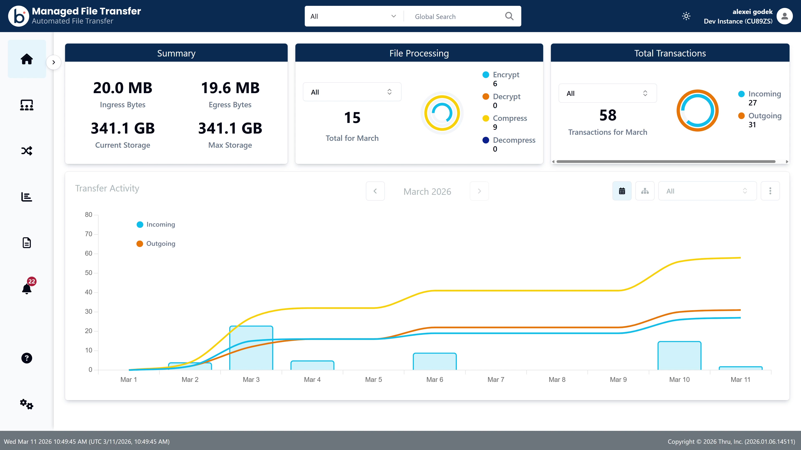
Summary Panel
Shows total ingress/egress bytes and current storage usage at a glance. Quickly tells you how active your MFT instance has been this month.
File Processing Stats
Counts of encrypted, decrypted, compressed, and decompressed files for the period — useful for spotting unusual volume changes.
Transfer Activity Chart
Incoming vs. outgoing transfers plotted over the month. Hover data points to see breakdowns. Filter by month or specific organisation to scope the view.
Navigate to Activity
From the dashboard, select Activity in the left nav to see individual file transfer events with full audit trails for compliance reporting.
Organisations & Endpoints
Platform SetupBefore building a flow, you create the participants and define how they connect. Organisations are the containers; Endpoints hold the connection credentials and protocol type.
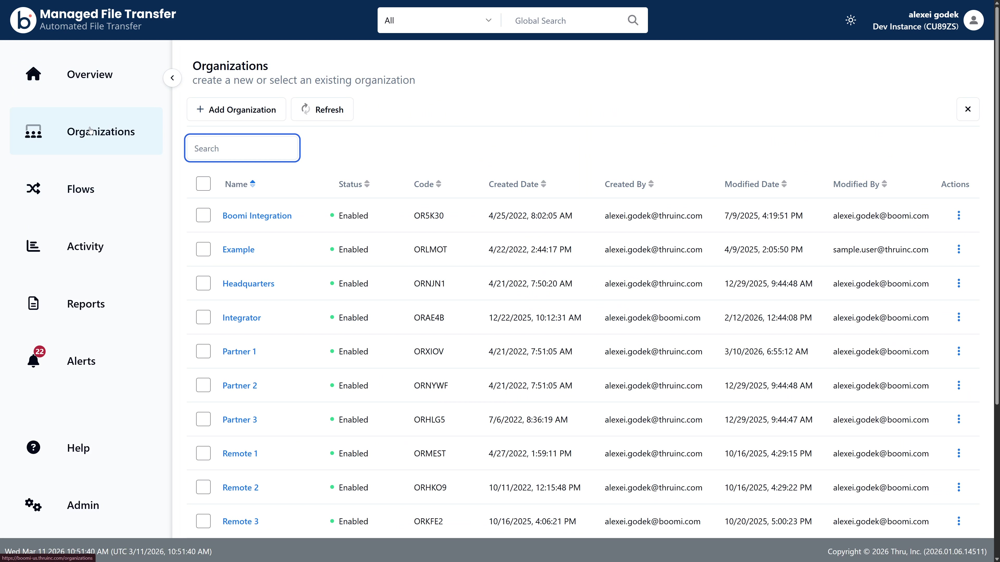
Creating an Organisation
Navigate to Organisations
Select Organisations in the left navigation. You'll see all existing participants.
Add Organisation
Click Add Organisation, give it a meaningful name ("Supplier A", "Headquarters"), and save. This creates the container that holds their endpoints and keys.
Add Endpoints
Inside the organisation, click Add Endpoint. Name it, choose the protocol type from the list, and fill in the connection details. An organisation can have multiple endpoints.
Test & Validate
Use Test Connection and Validate buttons to confirm connectivity before using the endpoint in a flow. Fix any issues before it goes live.
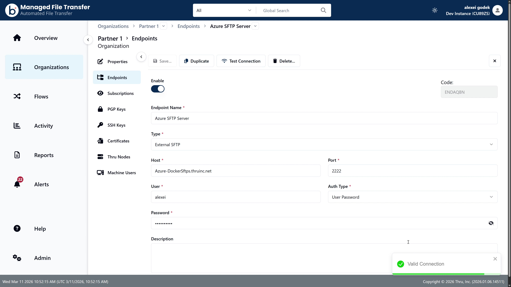
Supported Endpoint Types
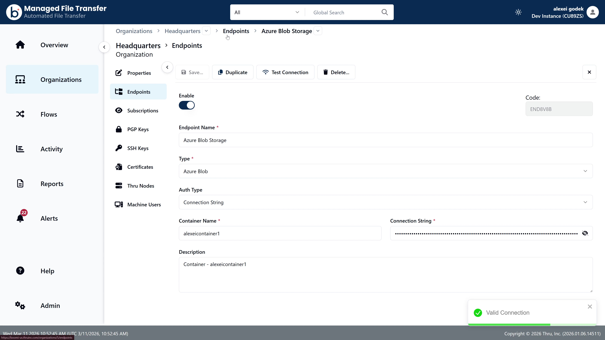
Keys & Certificates
SecurityAll cryptographic material is managed in one place — no more tracking key files in shared drives or updating scripts when keys rotate.
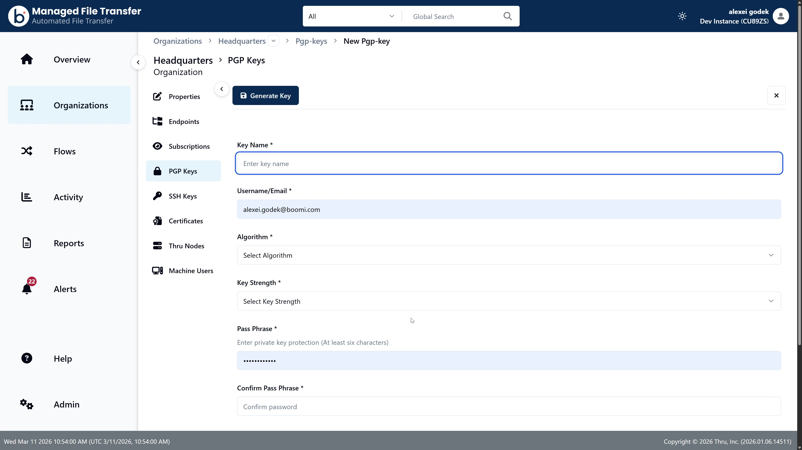
| Key Type | Used For | Create or Import? |
|---|---|---|
| PGP Key Sets | Encrypting/decrypting file content in transit and at rest | Create (algorithm & key strength) or Import |
| SSH Key Sets | SFTP authentication — share your public key with partners, or import theirs | Create (algorithm & key strength) or Import |
| Certificates | FTPS connections (TLS mutual auth) | Import only — issued externally |
Keys are scoped to an organisation. Multi-tenant by design — one partner's keys are never visible to another, enabling true data sovereignty for all participants.
Runtimes
Hybrid DeploymentA Runtime is a lightweight agent you install on any machine — on-premises, in a VM, or in a private cloud. It extends Boomi MFT behind firewalls and enables transfers to local file systems, network shares, and mapped drives that the cloud cannot reach directly.
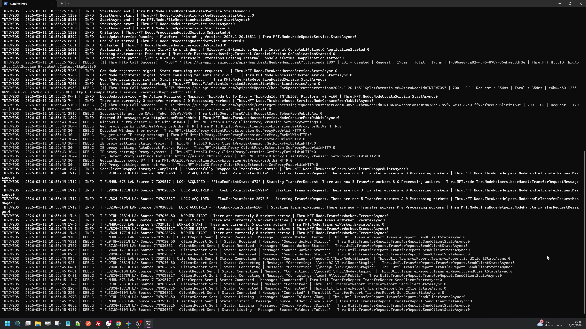
Installing a Runtime
Create in the Portal
Navigate to Runtimes. Click Add Runtime, give it a name, save — then click the Download button to get the installer.
Install via Script
Windows: Copy the generated PowerShell script, paste into an elevated prompt — it installs and self-configures.
Linux: Grab the apt/yum or systemd script, paste into a terminal — same result.
Verify in the Portal
Once running, the runtime appears as Alive with its hostname, IP, and last heartbeat timestamp. The cloud manages scheduling and job assignment from here.
What a Runtime Can Access
If the operating system can mount or see a path, the runtime can use it:
Heartbeat Alerts
Click any runtime to configure alert recipients for when it goes offline or comes back online. Assign to specific email addresses rather than all admins — keep the signal relevant.
Creating Flows
Core FeatureA Flow is the core unit of Boomi MFT. It defines a file transport route and the organisations that participate in it as sources and targets.
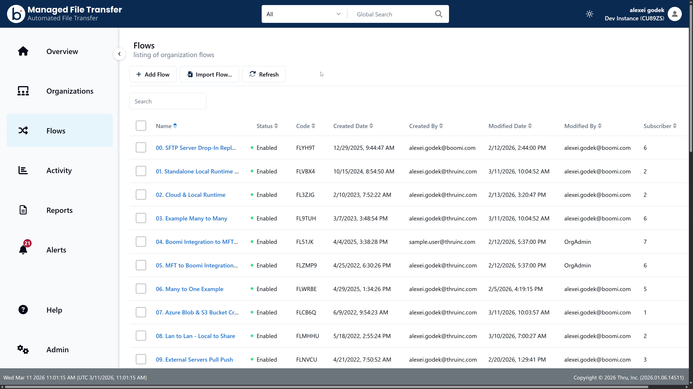
Building a Flow
Create the Flow
Click Add Flow, give it a descriptive name ("Supplier Orders to HQ"), and save. Additional options: export to a file, export to FileZilla, disable, or delete from the flows list.
Add Subscribers
Open Subscribers. All organisations in your instance are shown. Select the ones participating in this flow — Headquarters, Partner 1, Supplier, Vendor — and click Subscribe.
Configure Sources
For each source organisation, choose which of their endpoints to collect from — their external SFTP, their S3 bucket, or your internal hosted server. Multiple endpoints per organisation are supported.
Configure Targets
For each target, choose the delivery endpoint and path. Define processing, transformations, and outbound triggers.
Publish
Push and publish the flow. It becomes active immediately — runtimes and cloud processors start acting on it based on their configured schedules.
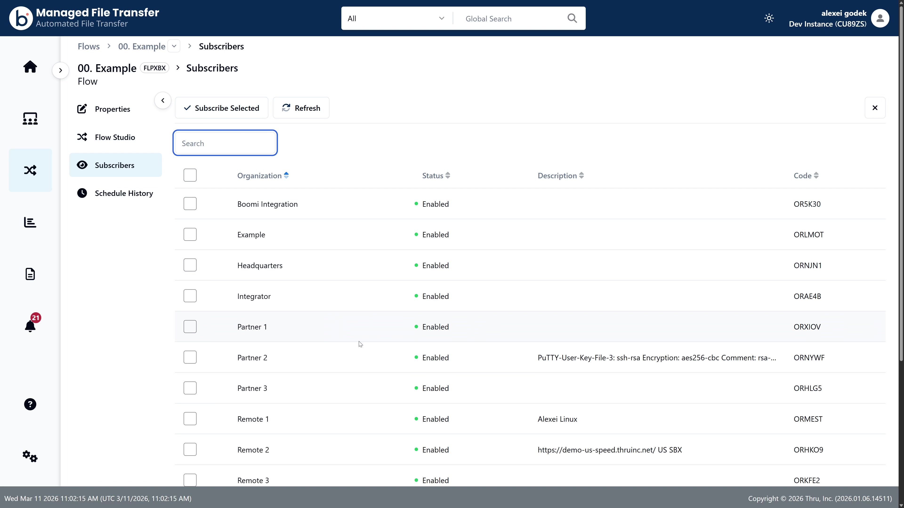
Example — Multiple Suppliers → Headquarters
External SFTP
MFT Orchestrated
Network Share
S3 Bucket
Internal Drop
Source Configuration
Flow DetailWhen you add a source endpoint to a flow, you configure how Boomi MFT collects files from it. These are per-source settings, separate from the endpoint's base credentials.
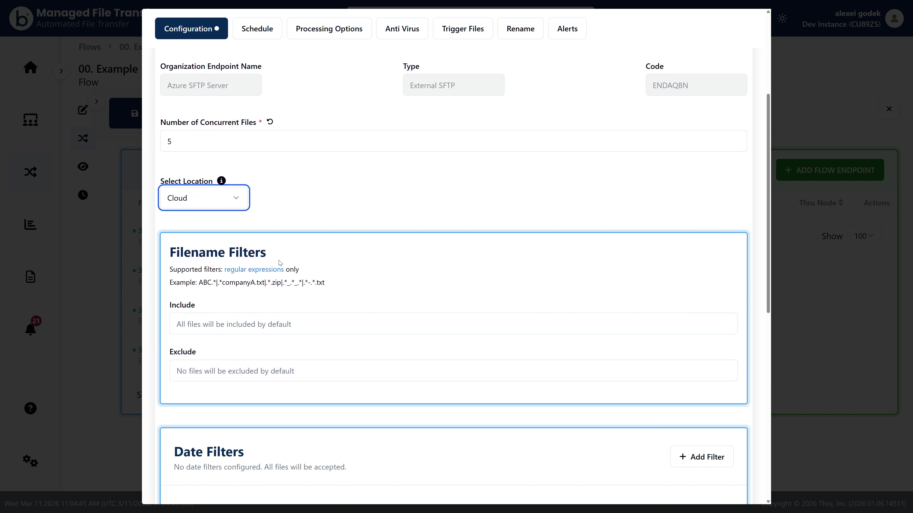
Processing
Choose whether this source is processed by the Cloud or a specific Runtime. Cloud handles most external connections; runtime is required for on-premises paths or local file systems.
Filtering Options
| Filter | Description |
|---|---|
| Include (Regex) | Only collect files matching this pattern — e.g. .*\.csv$ to pull only CSV files |
| Exclude (Regex) | Skip files matching this pattern — e.g. exclude temp or archive files |
| Date Filter | Only collect files before/after/between specific dates. Critical for servers with years of historical files you don't want to pull accidentally. |
Post-Collection Actions
Delete from Source
After successful collection, delete the file. Standard for "pick up once" workflows.
Archive on Source
Move to an archive path instead of deleting. Choose one or the other — not both.
Include Subfolders
Recursively collect from subdirectories under the configured base path.
Encryption & Decryption
If incoming files are PGP-encrypted, configure decryption with a stored private key. Optionally verify authenticity with a signature key. This happens automatically in the processing pipeline.
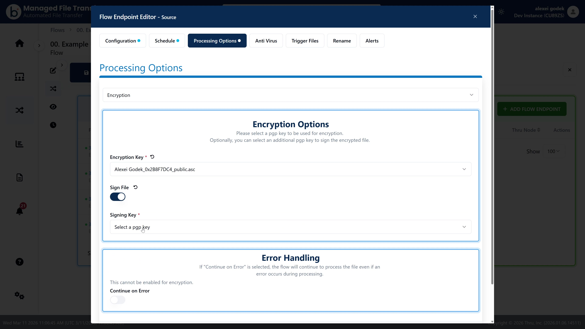
Trigger Options — When Is a File "Ready"?
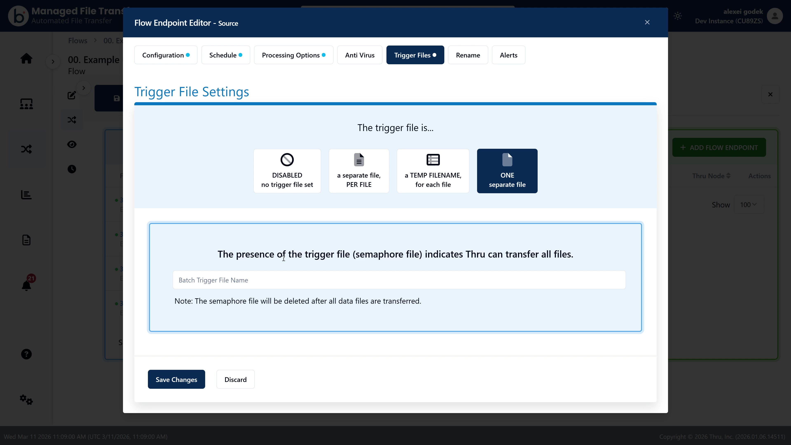
| Trigger Type | How It Works |
|---|---|
| Disabled | Collect immediately — no trigger mechanism |
| Temp Filename | Wait for a .tmp or .part suffix to disappear — indicates the file has finished writing |
| Trigger File (per file) | A separate signal file per data file indicates it's ready to transfer |
| One Trigger File | A single semaphore file indicates the entire batch is ready — deleted after all files transfer |
File Renaming
The rename engine is a visual pattern builder. Define matching rules (regex), then construct new filenames using building blocks: original name, timestamp (with format options), static text, and separators. Preview the result live before saving.
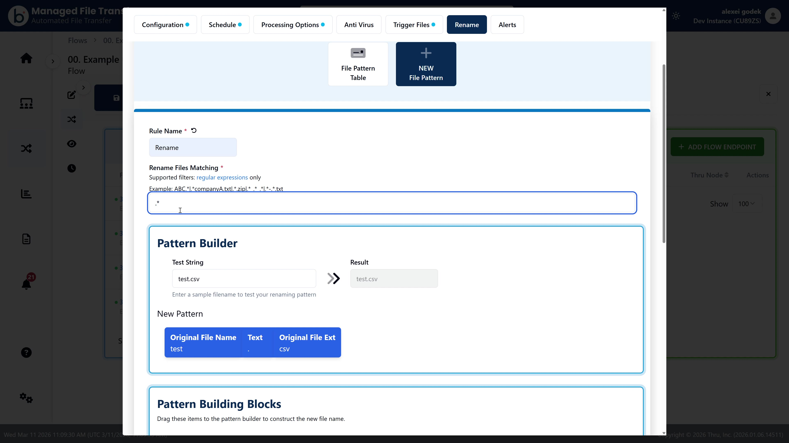
Source Alerts
Configure per-recipient email alerts at the source level:
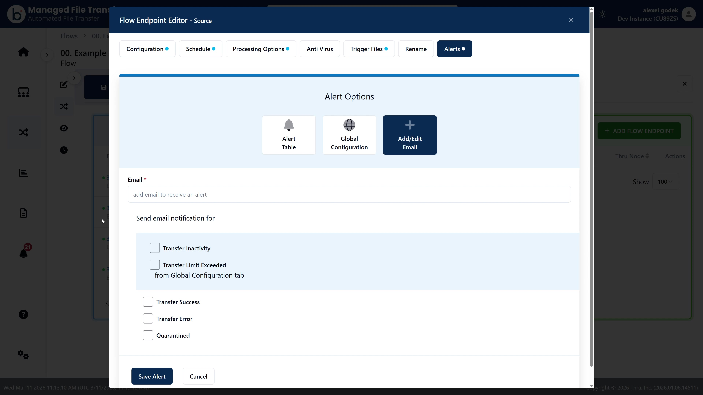
Each alert recipient can be filtered to receive only the alert types they care about — success emails, errors only, quarantine notices. Different people, different alert types, same flow.
Target Configuration
Flow DetailThe target side mirrors the source in structure, but defines where and how files are delivered.
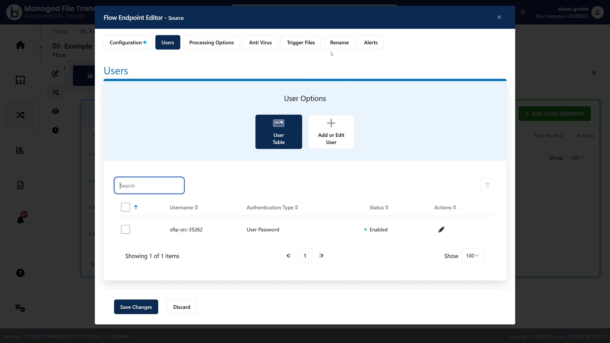
Key Target Settings
| Setting | Description |
|---|---|
| Delivery Path | Base path + optional sub-path for this flow's files. For runtime targets, the runtime must have OS-level access to this path. |
| Concurrency | How many files to deliver simultaneously to this target |
| Overwrite / Auto-timestamp | What to do if a file with the same name already exists at the target |
| Outbound Trigger File | Generate a signal file when delivery is complete, so downstream systems know the batch is ready |
| Temp Filename | Write with a temp name while delivering; rename to final only when complete — prevents downstream systems consuming a partial file |
Source-to-Target Mapping
The mapping layer lets you route specific sources to specific target paths within the same flow. A catch-all routes everything to one path; specific rules let you send Partner 1's files to Path A and Supplier's files to Path B — all in one flow, no custom code.
Real-World Scenario
Manufacturing ExampleManufacturing Supply Chain — Automated Purchase Orders
A manufacturing enterprise manages multiple suppliers for raw materials. When inventory drops below a threshold, the ERP system generates purchase orders. Those orders are transformed by the Boomi integration layer, handed to Boomi MFT, and routed to each supplier simultaneously — with Headquarters getting an archive copy of everything.
System Architecture
Inventory drops → PO generated
Transforms & routes to MFT API
Distributes to all subscribers
S3 Bucket
External SFTP
Internal Drop
SFTP Record
The flow runs on a schedule. Each supplier only sees their own file. Headquarters receives all files for audit.
Step-by-Step Walkthrough
Boomi Integration Drops Files into MFT
The integration process generates PO files and calls the MFT API — passing the storage key, secret, and target flow/endpoint — to stage the files for distribution. One file per supplier, named accordingly ([001]_110326.xml, [002]_110326.xml, etc.).
MFT Receives and Stages the Files
MFT picks up the files from the "Boomi Drop Off" flow endpoint. The Activity view immediately shows the files arriving — which flow, which organisation, file size, and timestamp.
Flow Routing Distributes to Each Subscriber
Using the flow's mapping rules: [001] file → Partner 1, [002] → Partner 2, [003] → Partner 3. Headquarters receives a copy of all files. Each supplier only sees their own PO — no cross-tenant visibility.
Failures Are Caught and Alerted Immediately
If Partner 3's S3 endpoint is down, MFT logs the failure in the Activity view and fires an alert email. The other deliveries continue normally. The broken endpoint shows a delivery count of "0/1" — easy to spot.
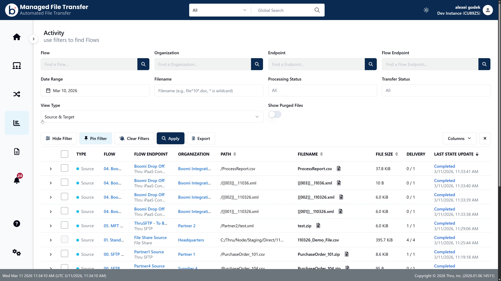
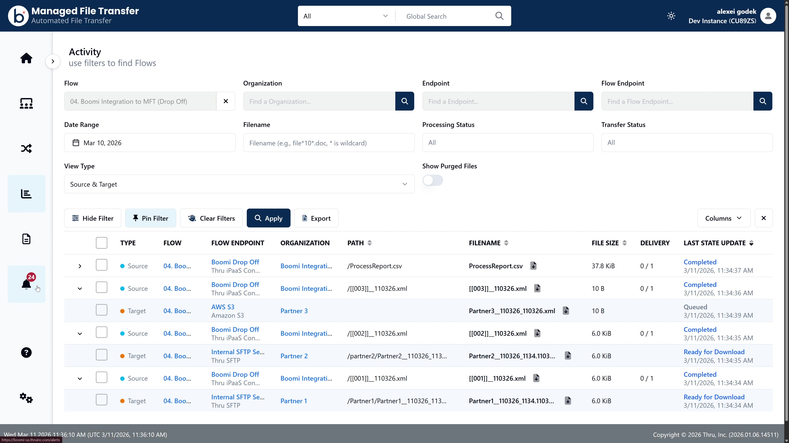
Boomi Integration ↔ Boomi MFT
The connection between Boomi Integration and Boomi MFT is bidirectional and API-driven. The integration process uses the MFT API connector with stored credentials (storage key + secret) to identify the target flow endpoint. The reverse works too — MFT can stage a file for Boomi Integration to pick up, triggering downstream processing. Both directions are visible and traceable in the Activity view.
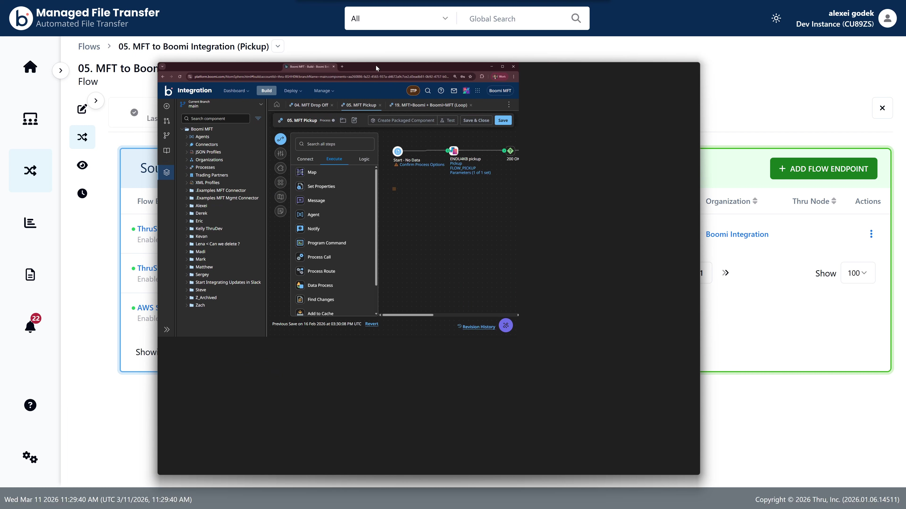
Monitoring & Alerts
OperationsBoomi MFT responds to failures immediately — no polling, no waiting for someone to check a dashboard.
The Alerts Page
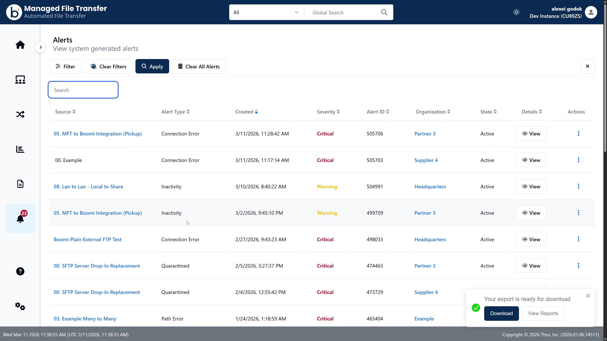
The Alerts page shows all active alerts across every flow and organisation — severity (Critical / Warning), the affected flow and partner, and the alert type. Once an issue is resolved, clear the alert to keep the view clean. Alerts are also emailed to configured recipients as they fire.
Alert Types
| Type | What It Means |
|---|---|
| Connection Error | MFT can't reach an endpoint — credentials expired, server down, or firewall change |
| Inactivity | No files transferred in the expected window — partner may have a problem on their side |
| Quarantined | File failed AV scan or couldn't be decrypted — held for manual review |
| Path Error | Configured path no longer exists or accessible — common after infrastructure changes |
Activity View — Full File Lifecycle
Every file in the Activity view shows its complete lifecycle: received → renamed/compressed/encrypted → delivered (or failed) — with timestamps at each step. Filterable by flow, organisation, endpoint, filename, date range, and transfer status. Exportable for compliance reporting.
Administration
Platform ManagementUser Roles
| Role | Access Level |
|---|---|
| Administrator | Full access — users, organisations, flows, runtimes, keys, configuration, and audit log |
| Instance User | Manages flows and organisations, but not system-wide settings |
| Organisation User | Scoped to a single organisation — manages their endpoints, sees only their transfers |
| Transfer User | Self-service portal access for ad-hoc file sharing — can't see other users' files |
Audit Log
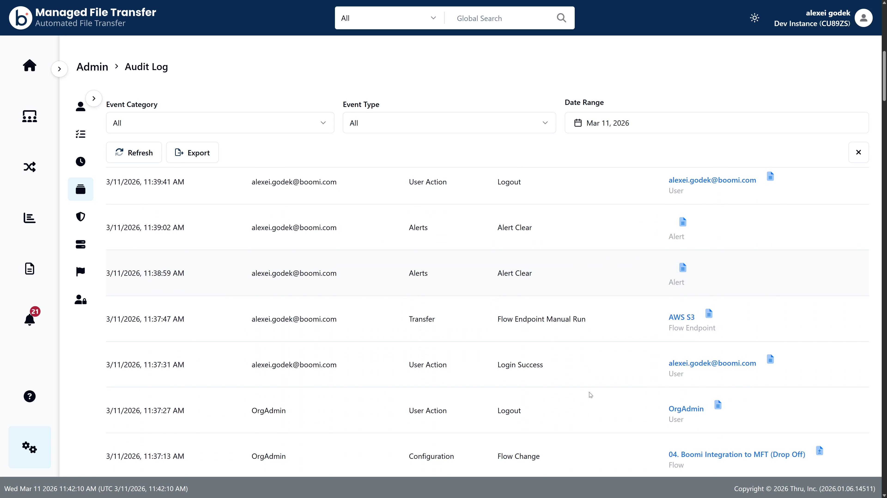
Every administrative action is logged — configuration changes, user creation, flow updates, key imports, alert clears. Who did what, and when. Exportable to CSV. This applies to everything including API-driven changes, so your CI/CD pipelines and automation are also fully auditable.
Summary & Checklist
Wrap-UpUse this checklist to confirm you've covered the key capabilities. Check each item off as you complete it.